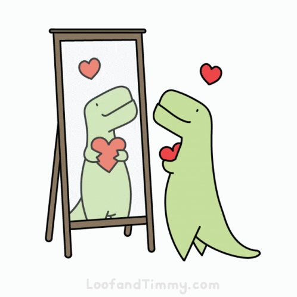

Self-exploration is a continuous, playful journey where individuals delve into their multifaceted selves. It involves embracing both shadows and light, understanding past traumas, and uncovering untapped potentials. Unlike self-discovery, there's no specific endpoint; it's an ongoing process of wandering, discovering, and connecting the trails within. This approach allows for a deep understanding of one's inner landscape, encompassing mind, body, spirit, emotions, energies, and past experiences, ultimately resulting in the creation of a unique and comprehensive map of oneself.
-By Conni Biesalski